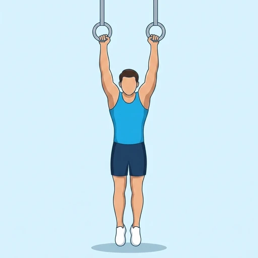

Ring Muscle-Up
An advanced calisthenics movement combining a pull-up and a dip on gymnastic rings.
Back · Gymnastic Rings · Advanced


Muscles worked by the Ring Muscle-Up
Primary
Secondary
Also called: lats, lat, latissimus dorsi, latissimus, back wings, pec.
Equipment
Also called: gymnastic rings, still rings, wood rings, olympic rings.
How to do the Ring Muscle-Up
- Hang from the rings with a false grip, palms facing each other.
- Pull explosively, driving the chest up to the rings.
- Transition the elbows over the rings as the chest rises.
- Press to full arm extension at the top.
- Lower under control through the transition back to the hang.
Form tips
- A false grip is essential for the transition.
- Drive the elbows down hard during the transition.
- Build the strength with negatives and band-assisted reps first.
At a glance
| Body part | Back |
|---|---|
| Category | Strength |
| Force type | Pull |
| Mechanic | Compound |
| Difficulty | Advanced |
| Equipment | Gymnastic Rings |
| Goals | Strength, Power |
| Tags | Pull day, Calisthenics |
| MET | 6.0 (metabolic equivalent, for calorie estimates) |
| Unilateral | No |
| Bodyweight | No |
| Dataset id | ring-muscle-up |
Ring Muscle-Up in German & Spanish
| German | Ring Muscle-Up |
|---|---|
| Spanish | Muscle-Up en Anillas |
Descriptions, instructions and tips ship in all three languages in the JSON.
Related exercises
Exercise data (JSON)
The record below is exactly what exercises.json ships for this exercise — names, descriptions, instructions and tips in English, German and Spanish.
{
"id": "ring-muscle-up",
"name_en": "Ring Muscle-Up",
"name_de": "Ring Muscle-Up",
"name_es": "Muscle-Up en Anillas",
"description_en": "An advanced calisthenics movement combining a pull-up and a dip on gymnastic rings.",
"description_de": "Eine fortgeschrittene Calisthenics-Übung aus Klimmzug und Dip an Turnringen.",
"description_es": "Un movimiento avanzado de calistenia que combina dominada y fondo en anillas de gimnasia.",
"category": "strength",
"force_type": "pull",
"mechanic": "compound",
"difficulty": "advanced",
"equipment": "rings",
"body_part": "back",
"primary_muscles": [
"latissimus_dorsi",
"pectoralis_major",
"triceps_brachii"
],
"secondary_muscles": [
"anterior_deltoid",
"biceps_brachii",
"rhomboids"
],
"goals": [
"strength",
"power"
],
"tags": [
"pull_day",
"calisthenics"
],
"variation_group": "pull-up",
"is_unilateral": false,
"is_bodyweight": false,
"instructions_en": [
"Hang from the rings with a false grip, palms facing each other.",
"Pull explosively, driving the chest up to the rings.",
"Transition the elbows over the rings as the chest rises.",
"Press to full arm extension at the top.",
"Lower under control through the transition back to the hang."
],
"instructions_de": [
"Hänge mit Falschgriff in den Ringen, Handflächen zueinander.",
"Ziehe explosiv und treibe die Brust zu den Ringen.",
"Bringe die Ellenbogen über die Ringe, während die Brust steigt.",
"Drücke oben in volle Armstreckung.",
"Senke kontrolliert durch die Transition zurück in den Hang."
],
"instructions_es": [
"Cuelga de las anillas con agarre falso, palmas enfrentadas.",
"Tira explosivamente, llevando el pecho hacia las anillas.",
"Pasa los codos por encima de las anillas mientras sube el pecho.",
"Empuja arriba hasta extender los brazos.",
"Baja con control pasando por la transición hasta volver al colgado."
],
"tips_en": [
"A false grip is essential for the transition.",
"Drive the elbows down hard during the transition.",
"Build the strength with negatives and band-assisted reps first."
],
"tips_de": [
"Der Falschgriff ist entscheidend für die Transition.",
"Drücke die Ellenbogen während der Transition kräftig nach unten.",
"Baue Kraft zuerst mit Negativen und Bandunterstützung auf."
],
"tips_es": [
"El agarre falso es clave para la transición.",
"Empuja los codos hacia abajo con fuerza durante la transición.",
"Construye la fuerza primero con negativas y asistido con banda."
],
"met": 6.0,
"images": {
"flat": {
"start": "images/flat/ring-muscle-up-start.webp",
"peak": "images/flat/ring-muscle-up-peak.webp"
}
}
}Fetch just this exercise
const { exercises } = await fetch(
"https://exercise-dataset.com/exercises.json"
).then(r => r.json());
const ex = exercises.find(e => e.id === "ring-muscle-up");Free for personal and commercial in-app use with attribution (“Exercise data by RepDB”) — see the license and ready-made attribution snippets. Redistributing the data as a dataset or API is not permitted.